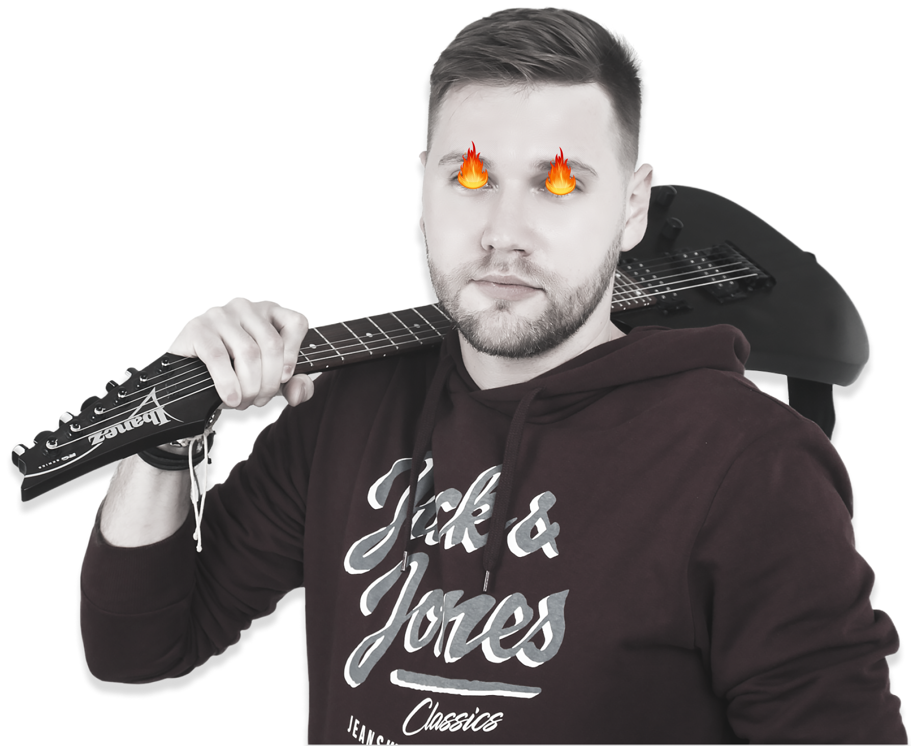

Привіт, це я —
Артем
Демідов
UX/UI designer

Трохи про мене
За 5 років роботи комерційним дизайнером я встиг попрацювати в різних напрямках, реалізувавши безліч проектів. Я отримав цікавий досвід роботи, як з міжнародними агентствами і студіями, так і з приватними замовниками.
Сьогодні я сфокусував усі сили, знання, уміння та досвід на тому, що мені по-справжньому подобається: проектуванні інтерфейсів, дизайні сайтів, технічному дизайні, створенні айдентики.
Досвід роботи
"Компанія Combiway", Web-designer
- Проводив UX аудит
- Оптимізував існуючий сайт
- Створював іконки, ілюстрації, логотипи, банери та інші графічні елементи
- Проводив дослідження та порівняння конкурентів
- Співпрацював з розробниками і SEO спеціалістами
"Digital агенція MAS Group", UX/UI designer
- Розробляв UX/UI для сайтів
- Співпрацював з менеджером, замовником, SEO та front-end розробниками
- Створював дизайн-проекти у Figma
- Розробляв концепти і шукав референси для замовника
- Оформлював презентації для клієнтів
Freelance, Web-designer
- Розробленяв прототипи та дизайн для веб-сайтів
- Створював дизайн лендінгів, налаштовував і змінював шаблони під Wordpress
- Проводив брифінг з клієнтами, готував графічні матеріали для сайтів
Освіта та курси
- HTML & CSS Курс 2022
- UX/UI Дизайн 2015
- Українська інженерно-педагогічна академія 2014,
Інженер-механік
Навички
- Психологія
- Філософія дизайну
- Digital маркетинг
- Типографіка
- Адаптивний дизайн
- Теорія кольорів
- HTML & CSS